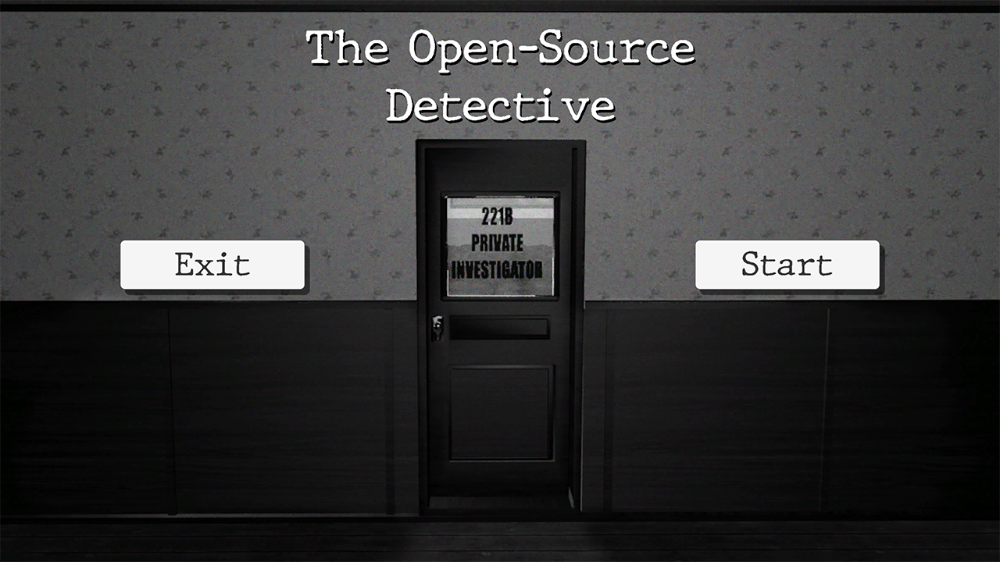
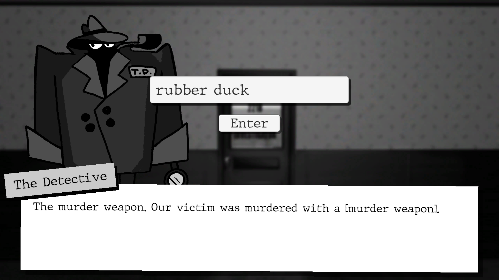
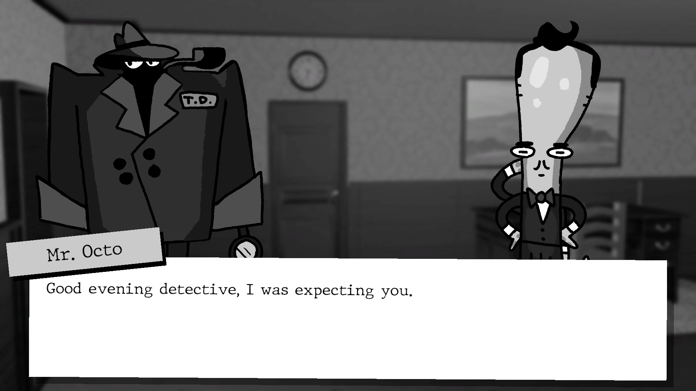
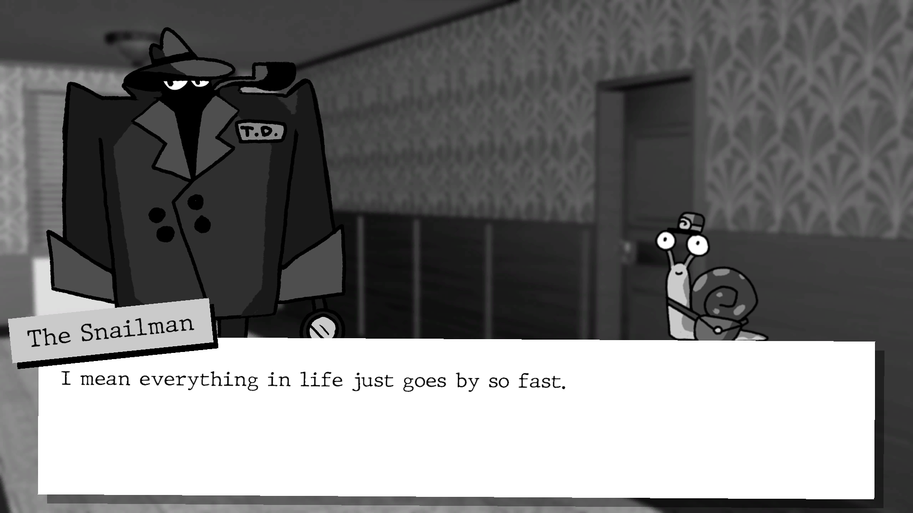

The Project
We made this project in a week for a HKU seminar.
We wanted to combine the theme of Noir Detectives with the party game aspect of Jackbox or Kahoot.
In the game you help The Detective with solving a murder. However, you (and the group with which you play) must also come up with the backstory, like the murder weapon.
For the answer collecting we used: Answer Garden.



I was the developer on this project and created all the gameplay code.
For the story functionality I used the Ink Editor.
You can play the game here:
The Open-Source Detective